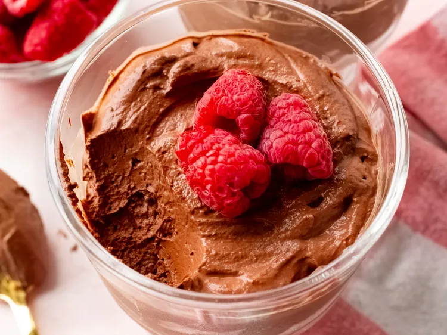

Home
Whipped Greek Yogurt Chocolate Mousse

Greek yogurt chocolate mousse served in a clear bowl with raspberries.
In this whipped chocolate mousse, the Greek yogurt adds a nice tang to the rich chocolate mousse. Serve it chilled alongside any fruit, berries, or maybe chopped nuts.
Ingredients
- 1/2 cup dark chocolate chips, such as Ghirardelli® 60% Cacao Bittersweet Chocolate Chips
- 1 cup plain whole milk Greek yogurt
- 2 tablespoons Dutch-processed cocoa powder, or to taste
- 2 tablespoons pure maple syrup, or to taste
- 1 teaspoon vanilla extract
- 1/4 teaspoon instant espresso powder (optional)
- 1 pinch salt
Steps
- Place chocolate chips in a microwave-safe bowl. Heat in the microwave in 30 second intervals, stirring after every 30 seconds, until melted; about 1 minute. Set aside to cool slightly.
- Beat Greek yogurt, cocoa power, maple syrup, vanilla, espresso powder and salt together in a large bowl with an electric mixer on medium speed until smooth and combined, about 30 seconds. Add melted chocolate and beat on medium speed until mixture is light and airy, 1 to 2 minutes. Taste, and add more maple syrup, if desired.
- Divide mousse between 2 serving cups. Mousse can be served right away; but for the best flavor, cover and refrigerate for at least 1 hour before serving.